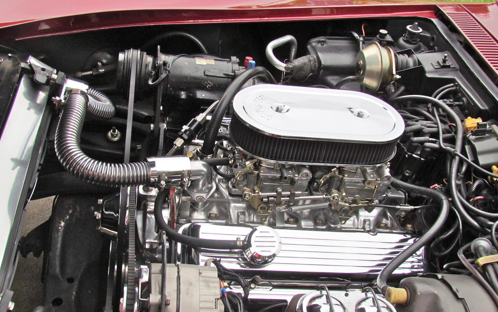

The Corvette Stingray C3 was available with a variety of engine
options, including the 327 cubic inch V8, the 350 cubic inch V8,
and the 454 cubic inch V8. The most powerful engine option was
the 454, which produced up to 460 horsepower and 500 lb-ft of
torque. The C3 also featured independent rear suspension, which
improved handling and ride quality.

The Corvette Stingray C3 was a popular sports car in its day, and it was a symbol of American automotive design and engineering. It was also successful on the racetrack, with notable victories at events such as the 24 Hours of Daytona and the 12 Hours of Sebring.
Today, the Corvette Stingray C3 is a highly sought-after collector car, with some models selling for hundreds of thousands of dollars. Its combination of performance, style, and American heritage make it an enduring icon of the golden age of American muscle cars.